ELO320 - Estructuras de Datos y Algoritmos
Complejidad Algorítmica
Marie González-Inostroza
Análisis de Complejidad (Resumen)
Complejidad en Algoritmos
Se miden por recursos utilizados:
- Tiempo de ejecución.
- Memoria.
- Ancho de Banda usado.
Complejidad en tiempo:
Utilizamos: Costo de operación = 1
Ejemplo: Análisis de Complejidad
int suma(int n) {
int sum = 0, i, j;
for (i=0; i < n; i++)
for (j=0; j < n; j++)
sum++;
return sum;
}
- Función de tiempo: $T(n) = 3n^2 + 4n + 6$.
- Término dominante: $n^2$.
- Notación: $suma = \Theta(n^2)$.
Análisis Asintótico
Determinar el término predominante en $T(n)$ y encontrar cotas de rendimiento.
Tres notaciones asintóticas:
- Big O ($\mathcal{O}$): Cota superior (peor desempeño).
- Big Omega ($\Omega$): Cota inferior (mejor desempeño).
- Big Theta ($\Theta$): Cota compuesta (rendimiento promedio).
Big O, Omega y Theta

Big O

Big Omega

Big Theta
ELO320 - Estructuras de Datos y Algoritmos
Algoritmos de Búsqueda
Marie González-Inostroza
Ejemplo: Búsqueda Lineal ($\mathcal{O}(n)$)
Buscar el valor K = 40 en una lista (se asume desordenada). El proceso revisa elemento por elemento.
- Paso 1 (Índice 0): Comparamos 2 con $K=40$. No son iguales.
- Paso 2 (Índice 1): Comparamos 5 con $K=40$. No son iguales.
- Paso 3 (Índice 2): Comparamos 12 con $K=40$. No son iguales.
- ...
- Paso 7 (Índice 6): Comparamos 40 con $K=40$. ¡Sí! ¡Elemento Encontrado!
Algoritmo de Búsqueda Lineal (Secuencial)
int busquedaLineal(int arr[], int n, int x) {
// arr[] es el arreglo de largo n
// x es el valor a buscar
for (int i = 0; i < n; i++) { // Bucle que se ejecuta hasta 'n' veces
if (arr[i] == x) {
return i; // Se encontró el elemento en el índice 'i'
}
}
return -1; // No se encontró en la lista
}
Complejidad: $\mathcal{O}(n)$ — Recorre la lista completa elemento por elemento.
Ejemplo: Búsqueda Binaria ($\mathcal{O}(\log n)$)
Buscar el valor K = 40 en la lista ordenada de $n=11$ elementos.
- Iteración 1: $\text{Low}=0$, $\text{High}=10$. $\text{Mid}=5$. Valor: 31. Como $40 > 31$, descartamos izquierda.
- Iteración 2: $\text{Low}=6$, $\text{High}=10$. $\text{Mid}=8$. Valor: 61. Como $40 < 61$, descartamos derecha.
- Iteración 3: $\text{Low}=6$, $\text{High}=7$. $\text{Mid}=6$. Valor: 40. ¡Encontrado!
Algoritmo de Búsqueda Binaria
int binary_search(int arr[], int low, int high, int key) {
if (high >= low) {
int mid = low + (high - low) / 2; // O(1)
if (arr[mid] == key) return mid; // O(1)
if (arr[mid] > key)
return binary_search(arr, low, mid - 1, key);
// T(n/2)
else
return binary_search(arr, mid + 1, high, key);
// T(n/2)
}
return -1; // O(1)
}
Complejidad: Búsqueda Lineal vs Binaria
| Estructura | Búsqueda | Mejor Caso ($\Omega$) | Caso Promedio ($\Theta$) | Peor Caso ($\mathcal{O}$) |
|---|---|---|---|---|
| Lista (Desordenada) | Lineal | $\mathcal{O}(1)$ | $\mathcal{O}(n)$ | $\mathcal{O}(n)$ |
| Lista (Ordenada) | Binaria | $\mathcal{O}(1)$ | $\mathcal{O}(\log n)$ | $\mathcal{O}(\log n)$ |
| Tabla Hash | Acceso Directo | $\mathcal{O}(1)$ | $\mathcal{O}(1)$ | $\mathcal{O}(n)$ |
| Árbol Binario Búsqueda | Recorrido de Árbol | $\mathcal{O}(\log n)$ | $\mathcal{O}(\log n)$ | $\mathcal{O}(n)$ |
Análisis de Recurrencias: Búsqueda Binaria
1. Definición de la Relación de Recurrencia
- $a$ (Subproblemas): Solo una llamada recursiva. $$\mathbf{a = 1}$$
- $b$ (Divisor): El problema se reduce a la mitad. $$\mathbf{b = 2}$$
- $f(n)$ (Costo Extra): Comparación y cálculo = constante. $$\mathbf{f(n) = \mathcal{O}(1)}$$
El Método Maestro (Master Theorem)
Método directo y rápido para determinar la complejidad asintótica de relaciones de recurrencia.
La Recurrencia debe tener la forma:
$$ \mathbf{T(n) = aT(n/b) + f(n)} $$
- $\mathbf{a \geq 1}$: Número de subproblemas.
- $\mathbf{b > 1}$: Factor de reducción del tamaño.
- $\mathbf{f(n)}$: Costo del trabajo fuera de la recursión.
Método Maestro: Tres Casos
Función de Comparación: $\mathbf{n^{\log_b a}}$
| Caso | Condición | Resultado ($\mathbf{T(n)}$) | Costo Dominante |
|---|---|---|---|
| Caso 1 | $f(n)$ es polinómicamente menor | $\Theta(n^{\log_b a})$ | Hojas (Recursión) |
| Caso 2 | $f(n)$ es asintóticamente igual | $\Theta(n^{\log_b a} \log n)$ | Equilibrado |
| Caso 3 | $f(n)$ es polinómicamente mayor | $\Theta(f(n))$ | Raíz (Trabajo Extra) |
Método Maestro: Búsqueda Binaria
Recurrencia: $\mathbf{T(n) = 1T(n/2) + 1}$
- Parámetros: $a=1$, $b=2$, $f(n) = 1$.
- Función de Comparación: $n^{\log_2 1} = n^0 = 1$.
- Comparación: $f(n) = 1$ y $n^{\log_b a} = 1$ → Son iguales → Caso 2.
- Resultado: $T(n) = \Theta(1 \cdot \log n) = \Theta(\log n)$.
Búsqueda en Árbol Binario de Búsqueda (ABB)
Es un árbol binario que permite guardar y buscar eficientemente datos.

Propiedad del ABB
Los hijos izquierdos guardan información menor (o igual), y los hijos derechos guardan información mayor, con respecto a la de su padre.

Esto facilita la búsqueda, inserción, y eliminación de elementos.
Búsqueda Recursiva en ABB
nodo_t * search_recursiva(nodo_t * raiz, int value) {
// Caso base
if (raiz == NULL || raiz->dato == value)
return raiz;
if (value < raiz->dato)
return search_recursiva(raiz->hijo_izq, value);
return search_recursiva(raiz->hijo_der, value);
}
Complejidad: $\mathcal{O}(\log n)$ en promedio, $\mathcal{O}(n)$ en peor caso (árbol degenerado).
Árbol AVL
Es un tipo de ABB que se auto-balancea para mantener su altura mínima, garantizando así una búsqueda eficiente.
Comparación: Búsqueda Lineal vs Binaria vs ABB
| Algoritmo | Estructura | Mejor Caso | Caso Promedio | Peor Caso |
|---|---|---|---|---|
| Lineal | Arreglo desordenado | $\mathcal{O}(1)$ | $\mathcal{O}(n)$ | $\mathcal{O}(n)$ |
| Binaria | Arreglo ordenado | $\mathcal{O}(1)$ | $\mathcal{O}(\log n)$ | $\mathcal{O}(\log n)$ |
| ABB | Árbol Binario Balanceado | $\mathcal{O}(1)$ | $\mathcal{O}(\log n)$ | $\mathcal{O}(n)$ |
Links de Referencia
Actividad 9.1: Comparación de Tiempos de Ejecución - Parte 1
En Aragorn, clona y compila el código base para comparar los tiempos de ejecución.
Árboles AVL
Un árbol AVL es un tipo de árbol binario de búsqueda que se auto-balancea para mantener su altura mínima, garantizando así una búsqueda eficiente.
Balanceo en Árboles AVL
Después de cada inserción o eliminación, el árbol verifica su factor de balanceo (diferencia de alturas entre subárboles) y realiza rotaciones para mantenerlo dentro del rango permitido (-1, 0, 1).
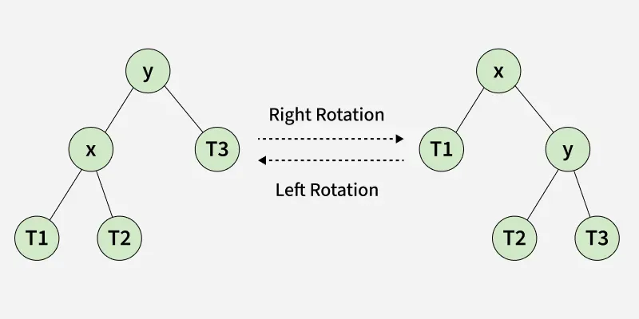
Balanceo en Árboles AVL
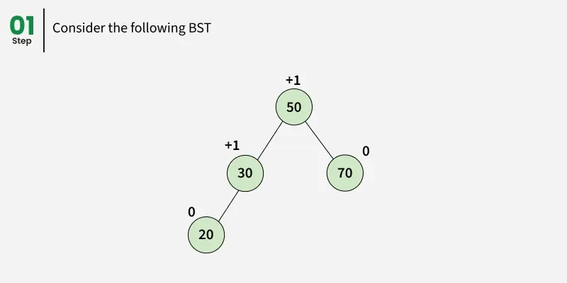
Balanceo en Árboles AVL
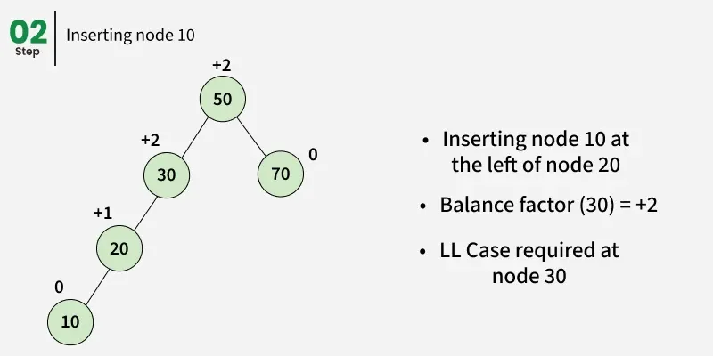
Balanceo en Árboles AVL
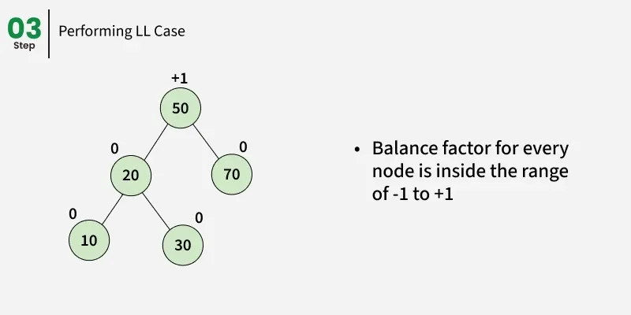
Balanceo en Árboles AVL
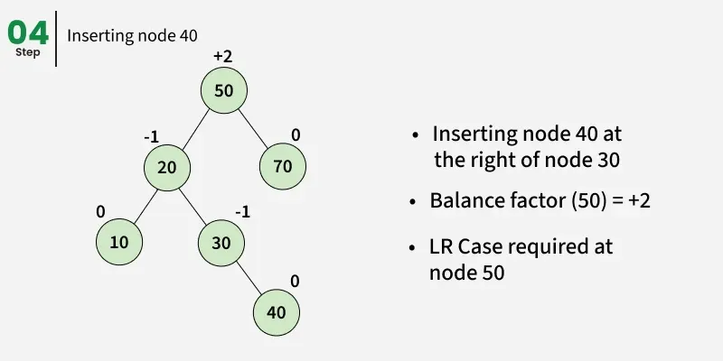
Balanceo en Árboles AVL
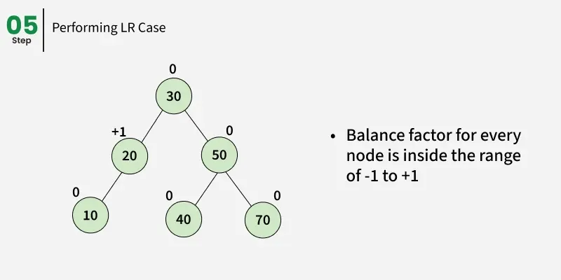
Balanceo en Árboles AVL
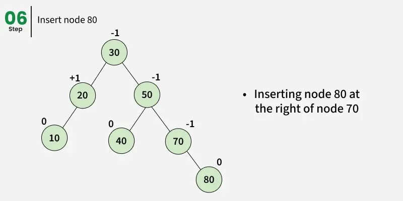
Balanceo en Árboles AVL
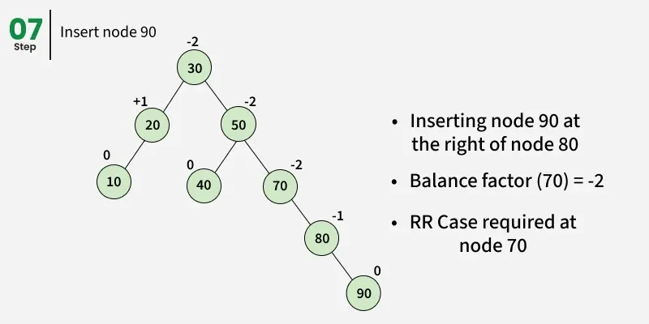
Balanceo en Árboles AVL
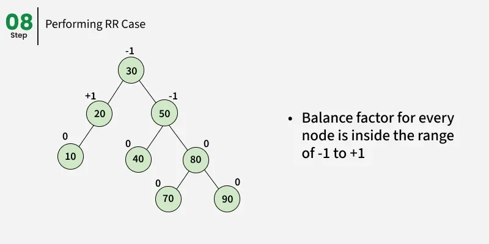
Balanceo en Árboles AVL
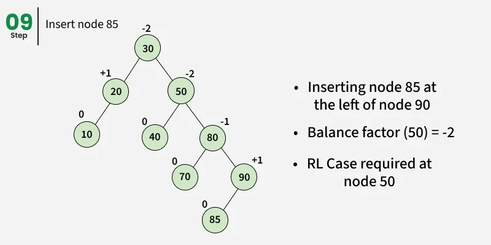
Balanceo en Árboles AVL
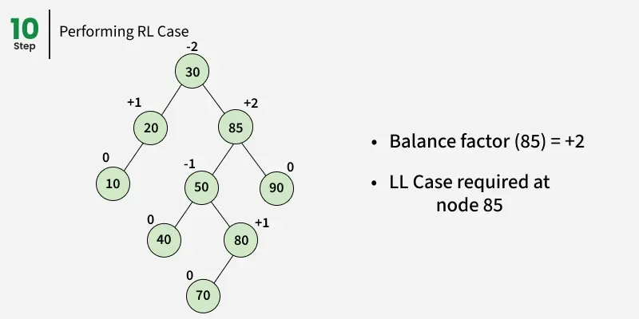
Balanceo en Árboles AVL
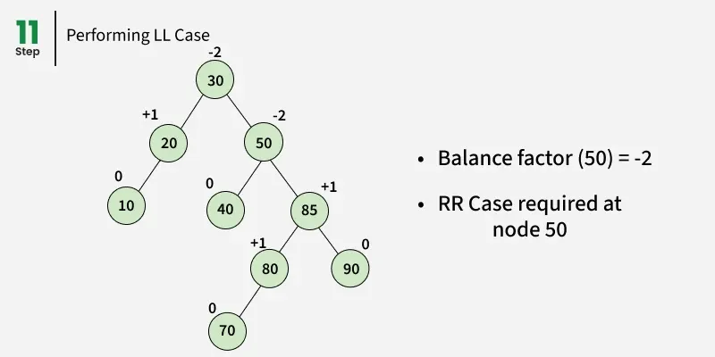
Balanceo en Árboles AVL
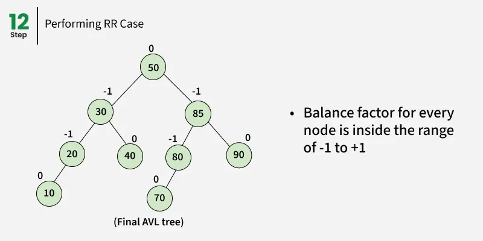
Actividad 9.1: Comparación de Tiempos de Ejecución - Parte 2
Revisa los cósigos y ejemplos de https://www.geeksforgeeks.org/dsa/insertion-in-an-avl-tree/
Modifica el código base para realizar una inserción balanceada mediante árboles AVL.
ELO320 - Estructuras de Datos y Algoritmos
Introducción a Grafos
Marie González-Inostroza
¿Qué es un Grafo?

Es un TDA de fácil visualización, que modela un conjunto de objetos mediante nodos. Estos pueden estar conectados entre sí mediante enlaces.
Aplicaciones: Redes Eléctricas

Aplicaciones: Redes de Agua Potable

Aplicaciones: Coloreo de Mapas

Formalización de Grafos
Un grafo se define como una tupla $\mathcal{G} = (\mathcal{V}, \mathcal{A})$, en donde:
- $\mathcal{V}$: Es el conjunto de vértices o nodos,
- $\mathcal{A} = \{ (x,y)\ |\ (x,y) \in \mathcal{V}^2 \land x \neq y \}$: Es el conjunto de aristas o enlaces.
Note que un arco $(x,y) \in \mathcal{A}$ conecta a dos nodos $x \in \mathcal{V} $ e $y \in \mathcal{V}$.
Conceptos: Grafos Dirigidos vs No Dirigidos
-
Grafo No Dirigido: Enlaces sin dirección (o con todas las direcciones)
-
Grafo Dirigido: Enlaces con una dirección específica.

Conceptos: Grafos Ponderados
-
Grafo No Ponderado: Enlaces no poseen valor o son equivalentes.
-
Grafo Ponderado: Enlaces poseen diferentes pesos o valores.

Conceptos: Nodos Adyacentes y Vecindario
-
Nodos Adyacentes: Nodos que se separan sólo por una arista.

-
Vecindario: Todos los nodos adyacentes respecto a un vértice.

Conceptos: Cadenas, Caminos y Ciclos
- Cadena: Secuencia de enlaces tal que cada arista tiene exactamente un vértice en común con la arista previa.
- Camino: Secuencia de enlaces tal que cada vértice terminal de una arista es idéntica al vértice inicial de la siguiente.
- Ciclo: Camino en el que el vértice terminal de la última arista es idéntico al vértice inicial de la primera.
- Árbol de Expansión: Cadena de $(n-1)$ arcos que conecta toda la red y no contiene ciclos.
Representación: Lista de Adyacencia
- Arreglo de listas donde se almacenan los enlaces involucrados.
- Utilizados en grafos escasos (sparse): $ |\mathcal{A}| <<< {|\mathcal{V}|}^2$.
- Memoria: $\Theta(|\mathcal{V}|+|\mathcal{A}|)$.
- Búsqueda Arista: $\mathcal{O}(|\mathcal{V}|)$.
- Añadir Arista: $\mathcal{O}(1)$.
Representación: Matriz de Adyacencia
- Arreglo binario bidimensional: $A[i][j]$ indica si existe un enlace entre el nodo $i$ y el nodo $j$.
- Utilizados para grafos densos, o cuando se necesita acceso rápido a los enlaces.
- Memoria: $\Theta(|\mathcal{V}|^2)$.
- Búsqueda Arista: $\mathcal{O}(1)$.
- Añadir Arista: $\mathcal{O}(1)$.